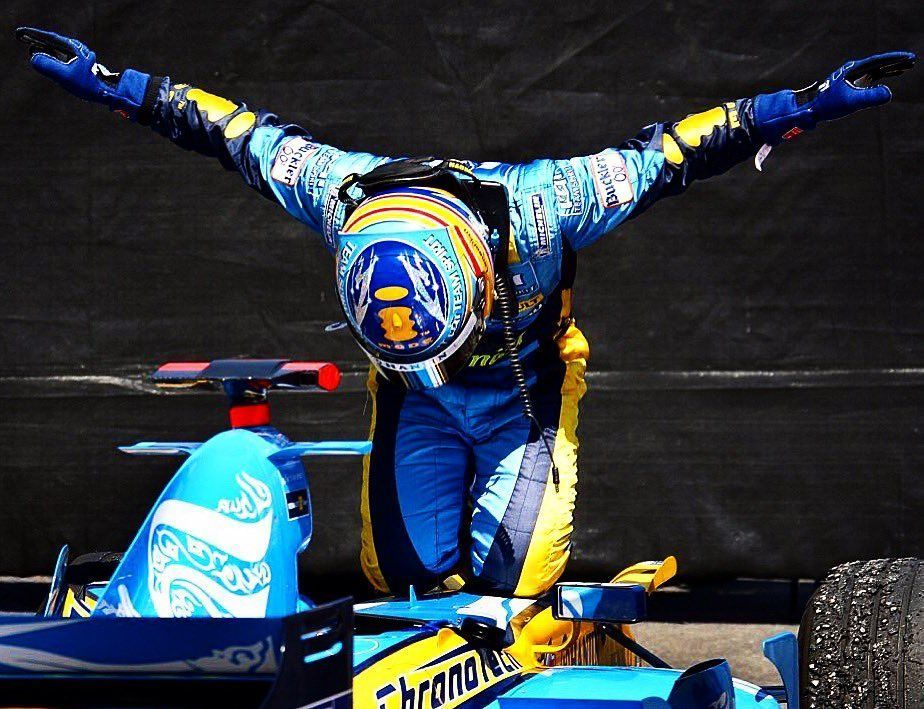
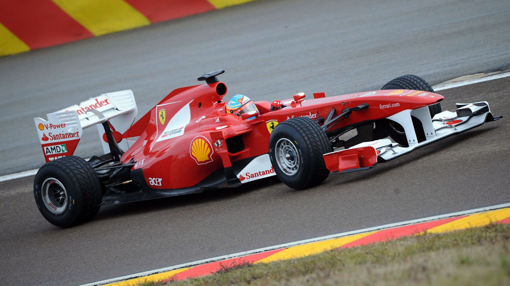
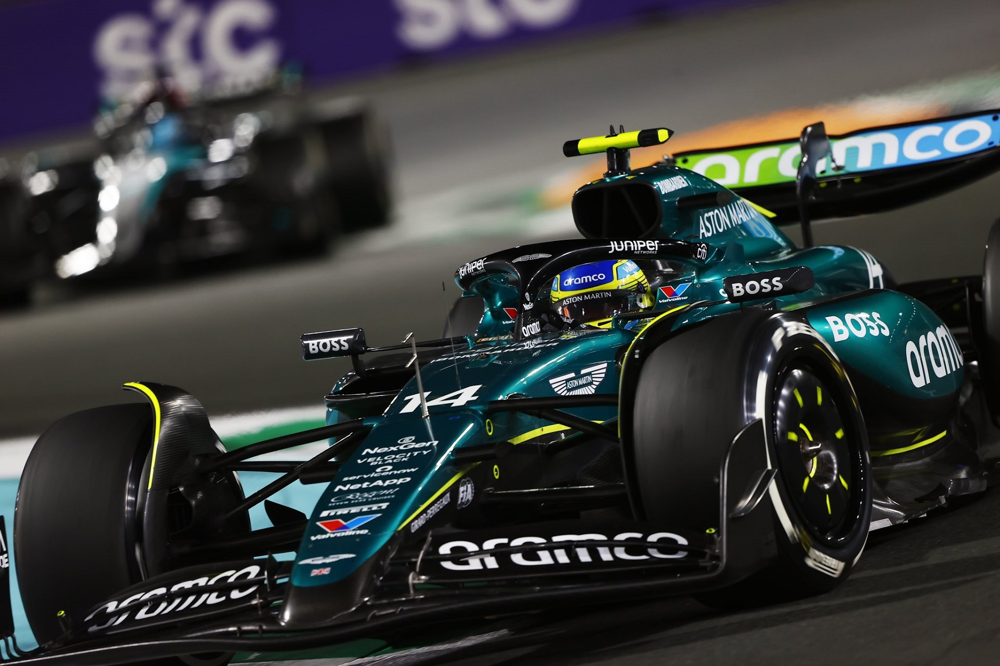

Principales Proyectos
ÉPOCA RENAULT
El asturiano tocó techo en los años 2005 y 2006, en los que fue campeón mundial de manera consecutiva y batiendo récords, ya que en aquel momento se convirtió en el campeón mundial de Fórmula 1 más jóven de la historia.

Tecnología: Renault R25 V10
Ver másÉPOCA FERRARI
Pese a varios años de grandeza tanto para la escuderia como para el piloto, no se consiguieron hacer con ningun titulo. Aun que muchos lo consideran su mejor epoca solo llego al puesto de subcampeón.

Tecnologías: Ferrari F138 V8
Ver másÉPOCA ASTON MARTIN
En 2023 Alonso firmaria con la que sigue siendo su escuderia a dia de hoy. Depués de varias temporas esta unión nunca ha estado a la altura que se esperaba, consiguiendo solo 8 podios.

Tecnologías: Aston Martin AMR26 V6 Híbrido
Ver más